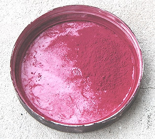
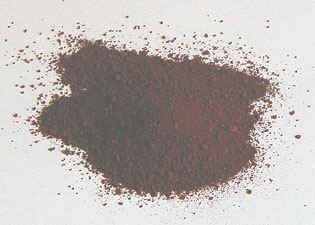

Violets
et mauves
Le mauve a une histoire moins extrême que le violet. Au
sujet de son origine étymologique, lire l'article
du glossaire sur la malachite.
Le violet de cobalt
Composition : phosphate de cobalt,
parfois hydraté.
Il est semi-transparent et d'une permanence moyenne.
Fait étrange : certains auteurs lui prêtent une totale indestructibilité, contrairement à
ce qu'annoncent certains fabricants. Il est coûteux.
Le
violet outremer
Il s'agit de silico-aluminate de sodium
qui semble sulfuré dans certaines formulations et non sulfuré dans d'autres
(informations fabricants).
Il est modérément colorant,
modérément couvrant mais moyennement lumineux (ce qui est déjà remarquable pour un
violet). Surtout, il est stable en mélange (sauf les variétés sulfurées de
mauvaise qualité,
incompatibles avec le plomb) et permanent.
Il est relativement peu courant, mais
différents fabricants le
proposent effectivement.
Voir Famille chimique des outremers
et Les bleus outremer.
Le
violet minéral ou violet de manganèse
Lire l'article Les manganèses in Familles
chimiques de pigments.
Lire l'article Manganèse du glossaire.
A base de phosphate de manganèse
(on mentionne aussi la présence d'ammonium,
mais il semble de toute façon que sa structure moléculaire ne soit pas
parfaitement connue), il est assez
coûteux. Il est bien opaque mais moyennement permanent. Il tend nettement vers le rouge.
Son
emploi en peinture à l'huile pourrait poser un problème de
siccativité excessive. Le
manganèse associé à l'oxygène faisant partie des siccatifs les plus puissants pour la peinture à
l'huile, nous émettons quelques réserves quant à son emploi dans ce procédé
: provoquant des "différentiels" de siccativation, il peut créer des
craquelures, des plissements et autres accidents. Il ne peut être employé sans
danger pour cette peinture que "pris en sandwich" entre deux couches de glacis isolant (il
est conseillé de respecter des temps de siccativation corrects).
Il est
également déconseillé pour les peintures à l'eau par différents fabricants,
mais il faut signaler l'existence de plastiques et résines industrielles
pourvues de ce pigment.
On en mentionne son emploi en France dès le paléolithique (autour de 20
000 BC), mélangé à l'eau ou à la graisse sous la forme d'un minéral
réduit en poudre. Il aurait été largement utilisé dès les néandertaliens
sous forme de bâtonnets.
Le violet de
Solférino
Peu courant, il est déconseillé par Xavier de Langlais
qui précise qu'il est composé d'aniline,
ingrédient très fugace. Nous invitons les internautes acheteurs de ce produit à vérifier
préalablement la
composition annoncée par le fabricant.
Après enquête, nous constatons que
certains violets et magentas de Solferino de bonne marque sont en fait des quinacridones,
dépourvus de la moindre trace d'aniline et très permanents. D'autres sont des
"laques de xanthène", un composé que nous connaissons mal. Lire
l'article du glossaire sur le xanthène.

Le magenta et le
rose tyrien
Longtemps, la couleur nommée usuellement "rose tyrien"
en France a constitué
le principal substitut au magenta, couleur théorique. Il présentait cependant le même
inconvénient que tous les pigments jouant ce rôle : une fugacité notoire. Mais le véritable rose tyrien n'a aucun
rapport avec la peinture : c'est une authentique
pourpre, dite aussi "pourpre royale".
Couleur
primaire en synthèse soustractive, le magenta (photo
ci-contre) est peu employé hors du
contexte scolaire. Longtemps fabriqué avec des ingrédients très peu
permanents de type aniline (comme le rose tyrien), un version à base de quinacridone,
d'une longévité bien supérieure, semble de nature à faire du magenta une véritable référence en peinture. Elle est souvent nommée "acra
magenta" (voir
ci-dessous).
Quant à l'authentique rose tyrien originel, nous n'avons pas
terminé d'enquêter au sujet de sa composition. Merci
de nous communiquer toute information à son sujet.
Lecture conseillée - notamment pour l'étymologie du mot
magenta - :
Le
magenta sur Pourpre.com
Le
violet d'Egypte
Parent du bleu
d'Egypte ?
Nous ne connaissons que son imitation - superbe -
composée de dioxazine et de phtalocianine
de cuivre. Toute information sur l'original est la bienvenue.
Les
violets de dioxazine
Lire l'article
consacré à cette substance synthétique.

Le
violet de Mars et l'hématite
Lire absolument l'article consacré
aux
oxydes de fer et à leur calcination.
Le
violet de Mars est un brun de
Mars (oxyde de fer brun) calciné. Mais il existe à l'état naturel et c'est alors
une variété d'hématite.
Nous l'avons synthétisé (la photo
ci-contre a été éclaircie pour mettre en valeur la couleur de ce pigment assez
sombre) avec
une cuisinière ordinaire et une simple casserole. Par rapport à l'original,
brun chocolat, il est transformé. Il devient nettement plus
rouge, plus lumineux, mais pas franchement violet. Comparativement aux oxydes de fer
rouge et dérivés (Sienne brûlée, ocre rouge, rouge de Mars), il est plus intense, un peu
plus sombre et plus froid. En fait, il ressemble aux rouges anglais et
indiens.
Nous
avons cru pendant un temps que la cuisson que nous avions infligée au pigment
était insuffisante pour produire un véritable violet. Nous avons cependant
enquêté et découvert que les tubes de violet de Mars du commerce ont tous exactement la même couleur que celle que nous avions obtenue. C'est donc bien
cette teinte rouge que certains nomment violet !
En conclusion, nous
conseillons à nos chers visiteurs de se méfier des appellations, même si, en l'occurrence,
c'est l'histoire qui continue à influencer l'intitulé de cette couleur (voir introduction).
Concernant
l'hématite, nous ne la traitons pas dans la page "Violets et mauves", contrairement à
différents auteurs, afin de ne pas entretenir une confusion d'origine
historique (cf. introduction). Les Grecs
l'assimilaient à juste titre au sang, pourquoi, donc, l'associer au violet ?
Lire l'article du glossaire.
Le
grenat
Lire texte in Les
rouges et les roses et surtout l'article du glossaire.
Le
violet et le magenta "acra"
Il s'agit de différentes
variantes quinacridoniques. Nous enquêtons
actuellement sur l'origine du terme "acra". Toute information est bienvenue.
Le caput mortuum
Cette
sinistre appellation désigne un violet grisâtre cadavérique. On peut féliciter les peintres qui
s'affranchissent des encombrantes visions que peut suggérer l'intitulé
de "caput mortuum", tête de mort,
pour n'en retenir que l'aspect chromatique, au demeurant très intéressant.
Dans l'offre commerciale, la composition de cette couleur est variable.
Malgré
nos recherches, nous manquons cruellement d'informations au sujet de la genèse
de cette couleur. Merci de nous apporter
toute information à ce sujet.
Le
bois de campêche
L'arbre, implanté en Amérique
tropicale, particulièrement dans le golfe du Mexique, fait partie de la famille
des césalpinées.
Utilisé par les Amérindiens, il est, dès
l'arrivée des Européens, l'objet d'un commerce de première importance. En
variant les produits de mordançage, on
obtient des teintes allant du bleu au rouge, soit beaucoup de violets et de
mauves, ainsi que des gris et des noirs. Ce sont
ces derniers qui survivront durablement à la découverte de la fugacité des
autres teintes obtenues.
Le noir de campêche n'a pas totalement disparu,
mais il fut largement employé (souvent associé au noir
des feuilles de châtaignier) jusqu'à la découverte de produits de synthèse
au XXème siècle.
L'orcanette
C'est
véritablement un colorant intercontinental. Il est extrait des racines de la plante
éponyme (Borraginacées - voir absolument Le borax). Il fut utilisé - et l'est encore parfois - sur tout
le bassin méditerranéen depuis l'Antiquité (Perse, Grèce, Égypte, Gaule,
Europe centrale), mais aussi en terre saami (anciennement Laponie), en Sibérie
(variété jaune paraît-il), au Japon, en Inde, et encore en Afrique du Nord
jusqu'au Maroc.
L'orcanette
a disparu (Moyen-âge) et réapparu plusieurs fois, localement ou plus
largement.
Elle se décline en plusieurs variétés et porte de
nombreux noms, parmi lesquels le latin alcanna tinctoria qui proviendrait
de l'arabe al-henneh à cause de sa ressemblance avec le henné
(ou parce que ce terme était plus générique que l'on ne croit), murasaki
en japonais, qui signifie simplement violet, ou encore "le buglosse des
teinturiers" (le buglosse est une autre plante de la famille des Borraginacées), etc.
Trois continents,
2500 ou 3000 ans d'âge au moins : c'est une star sur laquelle il est impossible
de faire l'impasse bien que partout sa magnificence n'ait
dissimulé à quiconque sa grande fugacité.
Elle
a surtout été employée comme teinture. Le mordant
est souvent l'alun, ce qui n'a rien d'original, mais il
semblerait que des adjuvant soient nécessaires et d'autres substances sont
utilisées. Notre correspondant au Japon, le peintre Shinji
YAMADA, nous a
rapporté comment l'on y opère :
On plonge alternativement
le tissu dans le jus de la racine puis dans de la cendre diluée dans l'eau,
probablement avec d'autres éléments. On obtient une gamme de couleurs du
violet-rouge au violet-noir en fonction de la durée de chaque plongée et de la
température de l'eau.
La cendre utilisée était-elle de la
cendre d'orcanette ? Cette information nous manque, mais c'est fort possible
car le procédé consistant à faire brûler une plante contenant du salpêtre
potassique afin d'extraire de la potasse est bien connu. Elle est même à
l'origine du mot potasse (cf. article du glossaire).
Ainsi, il n'est pas à exclure que l'une des particularités remarquables de
cette plante soit de permettre non seulement une coloration, mais aussi une
saponification, ce qui expliquerait
notamment son emploi passé en cosmétique (hypothèse non confirmée).
En Europe, on signale dans certains procédés l'utilisation
d'alcool (à partir de 35%), mais aussi d'huile (liant) et
d'alcalis (adjuvants).
Le jus d'orcanette se dilue en effet mal dans l'eau pure.
L'utilisation en cosmétique de cette
plante
est mentionnée dès le monde antique puis, plus tard, dans le monde arabo-musulman, mais elle semble ne pas s'être
avérée bénigne au fil des temps. C'est peut-être pour cette raison que
l'orcanette disparaît : teinture superbe mais trop fugace, cosmétique
présentant des effets secondaires, il ne lui reste que peu d'applications dans
le monde contemporain.
Violets
occidentaux anciens
Le
violet de Bayeux
Nous enquêtons sur l'origine de cette couleur
permanente et opaque actuellement composée usuellement (offre commerciale) de thioindigo
et ayant anciennement contenu un indigo
(mais lequel ?). Toute
information est bienvenue.
Le
violet de tournesol
C'est un violet médiéval,
fabriqué à l'aide de la plante éponyme. Voir absolument
Le bleu tournesol in Les bleus froids.
La
maurelle
C'est un arbuste (euphorbiacées) dont, au Moyen-âge,
on extrayait la sève. Le colorant obtenu serait plutôt brun (voir introduction,
violet de Mars).
Selon une
lectrice de Dotapea (que l'on remercie), la revue France pittoresque n° 29
précise ceci :
« La tinctoriale herbe aux verrues,
plante vert grisâtre exclusivement récoltée par les Gallargois (habitants de
Gallargues, Hérault) la maurelle fut longtemps et singulièrement transformée
au moyen de chaux et d'urine humaine en « drapeaux » chiffons gorgés de son
suc exportés en Hollande où ils confèrent a la croûte du fromage une couleur
caractéristique. »
L'orseille
Elle
est tirée de la rocelle (Roccella tinctoria), lichen poussant sur la roche en bordure de la mer
Méditerranée. Utilisée dès la haute antiquité mésopotamienne, elle donne
une teinture. Sa préparation exige l'apport d'ammoniaque (d'ou l'emploi d'urine,
voir passage in L'ammoniaque).
L'orseille
est utilisée au Moyen-âge comme "laque"
(voir laques anciennes)
Sa
teinte serait d'un rouge violacé.
Fort utilisée en
France lors d'une courte période du XIXème siècle, elle a pu être
nommée "pourpre française" (voir pourpre)
car on aurait découvert alors un procédé pour en faire une teinture plus fixe
qu'auparavant, ce qui faisait d'elle un nouvel enjeu économique à l'époque
où l'humanité avait perdu le secret de fabrication du seul rouge-violet permanent,
la pourpre.
L'orseille aurait
disparu pour deux raisons (nous empruntons l'information à un excellent
livre d'Anne Varichon) :
* elle aurait été
supplantée par la mauvéine (voir indican,
anilines), synthétisée au XIXème siècle à
partir de goudrons de houille, disparue depuis lors,
* elle se serait avérée toxique et aurait été abandonnée au XXème
siècle pour cette raison.
Les fruits rouges
La
mûre, fruit de la ronce (non du mûrier en l'occurrence), aurait été utilisée ainsi que d'autres petits
fruits comme la groseille. D'usage local, ils donnaient des couleurs très
fugaces - sauf, dans certains cas, notamment la mûre précitée.
Celle-ci,
selon les lieux et les époques semble tantôt fugace et d'usage mineur
(teinture de très petit teint, réalisée de manière
assez classique avec l'alun comme mordant en Occident),
tantôt d'une permanence remarquable,
notamment employée par les Peuples du Nord qui l'utilisaient non seulement comme
teinture mais aussi comme peinture pour les masques, ou encore en Asie centrale
dans la fabrication de tapis remarquables. Choix des baies, variétés
différentes (il existe des milliers de variétés de ronces) ou secret de
fabrication, nous ne saurions nous prononcer sur les raisons de ces écarts
très substantiels de permanence.
Les autres
fruits rouges ne sont pas particulièrement réputés sous ce rapport.
Pourtant, leurs intérêts gustatif et
olfactif, les réminiscences qu'ils peuvent évoquer, ne sont pas à dédaigner
pour les plasticiens (installations, tableaux voire performances).
Tout
témoignage à leur sujet nous intéresse.
Appellations
non contrôlées
L'alizarine
violette
Personne ne peut concevoir en quoi ce dérivé de
l'alumine
proposé par quelques fabricants de peintures peut présenter le moindre rapport avec l'alizarine (voir garance).
Colorante et lumineuse, moyennement permanente, elle peut présenter
de l'intérêt malgré son étrange appellation commerciale.
Le
violet de folium
Ce pigment mystérieux est évoqué dans
l'article consacré à l'indigo.
Autres
violets
Le zinzolin semble
surtout une teinture. Il est extrait des graines de sésame. Son origine et son
étymologie (djoudjolan) sont arabes.
Lecture conseillée :
Le
zinzolin sur Pourpre.com
Retour
début de page